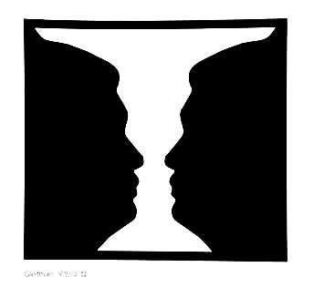
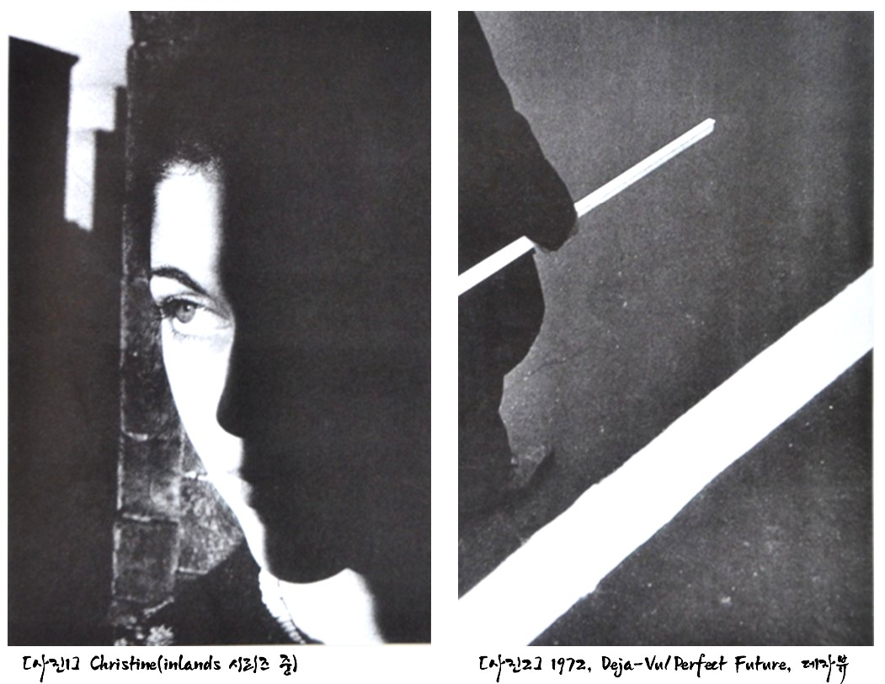

우리가 눈으로 보이는 세상은 지극히 주관적이고 심리적인데서 출발하게 됩니다. 흔히 ‘사진은 아는 만큼 찍는다.’라는 말도 인지심리와 무관하지 않습니다. 자신의 관심사, 좋아하는 것에 따른 시선의 이동이 동시에 이루어지기 때문입니다. 인간의 인지능력은 익숙하고 받아들이기 쉬운 방향으로 정보를 선택하고 조합하게 되는데, 이런 현상을 우리는 ‘게슈탈트 이론’이라고 부릅니다.
[사진1] : 루빈의 컵
게슈탈트 이론은
① 유사성의 법칙 : 사람은 무언가 볼 때, 가장 간단하고 안정적인
형태를 선택하고 인지합니다. 가장 쉬운 예로, 색명검사표를 볼 때
유사한 것끼리 묶어 하나의 숫자로 인식하는 것이 유사성의 법칙이라고
볼 수 있을 것입니다.
② 근접성의 법칙 : 사람의 뇌는 멀리 떨어져 있는 두 물체 보다는 서로
근접해 있는 물체들을 밀접하게 연관시킵니다. 시각요소들이 가까
이 있을 때 짝지어 보이는 착시현상을 말합니다.
③ 연속성의 법칙 : 뇌는 선의 갑작스럽거나 급격한 움직임의 변화를
좋아하지 않습니다. 가능한 한 선의 부드러운 연속을 추구하게 됩니다.
④ 공동운명의 법칙 : 동일한 방향으로 움직이는 것끼리 집단화하는
경향을 말합니다.
앞서 본 [루빈의 컵]그림처럼, [사진1]을 보면, 여인의 얼굴 위로 드리워진 그림자가 사진 속 또 다른 얼굴로 등장하는 것을 볼 수 있습니다.
[사진2] : Deja-Vu
게슈탈트 법칙을 잘 이용한 사진가로 랄프 깁슨(Ralph Gibson)이 있습니다. [사진2]는 게슈탈트의 유사성의 법칙을 이용한 것입니다. 바닥의 흰 선과 남자가 손에 들고 있는 흰 각목의 직선이 유사성을 배치하여 사진에 확 집중시키는 힘이 있습니다. 또한 흰 선으로 인해 시선이 산만해지지 않고 한 방향으로 자연스럽게 흘러갑니다.
[참고문헌]
[1]인지심리학과 그 응용,‘존 로버트 앤더슨’지음, 이영애 옮김, 이화대출판부, 2013. 1.18.
[2]원하는 사진을 어떻게 찍는가, 김성민, 소울메이트, 2015. 2. 9,
....
....
....
....
....